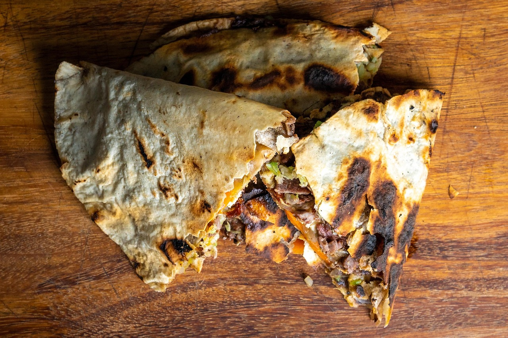
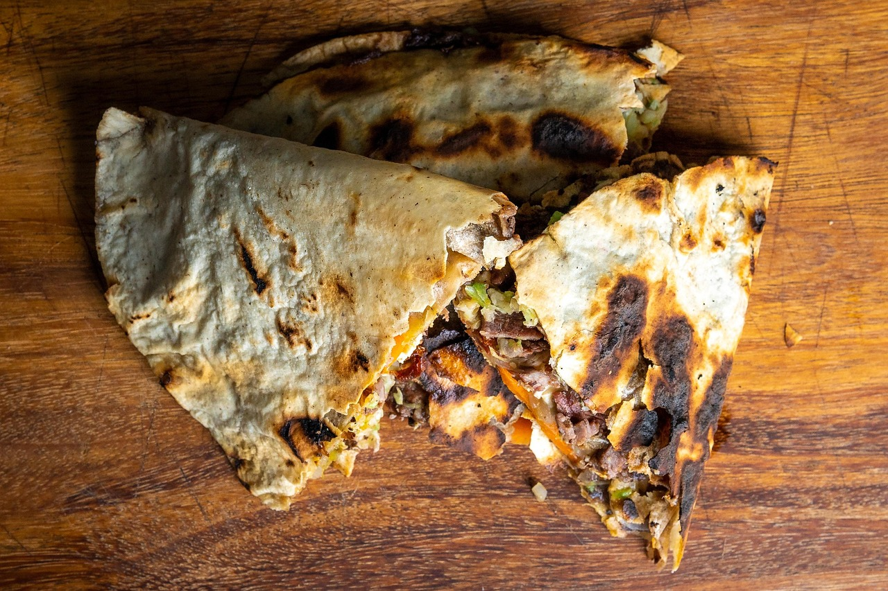
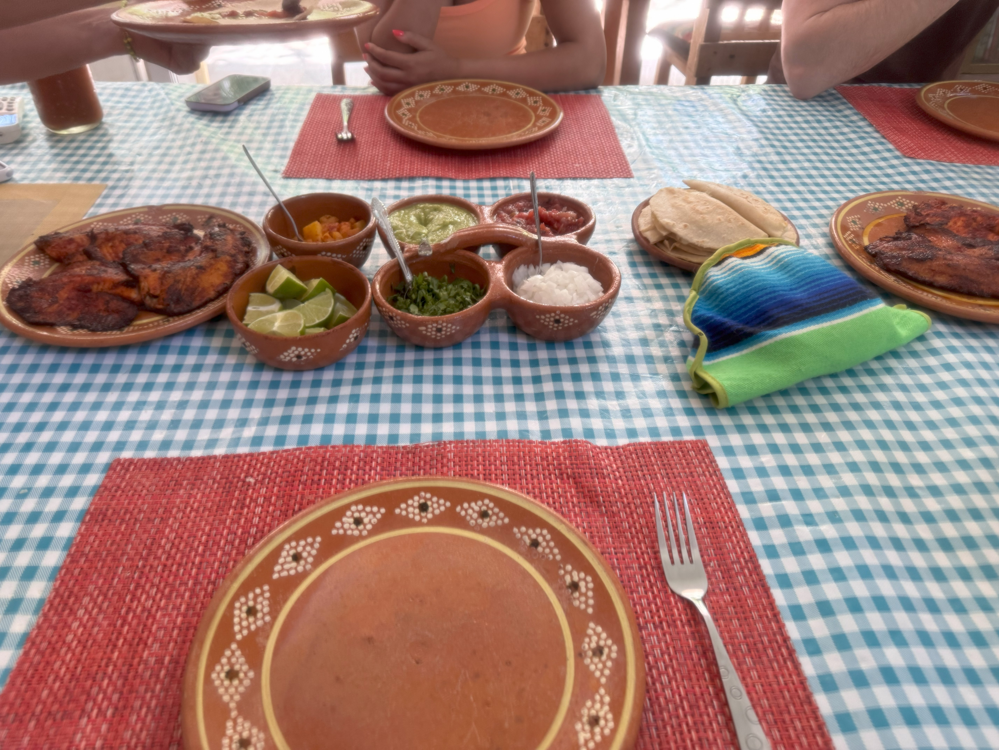
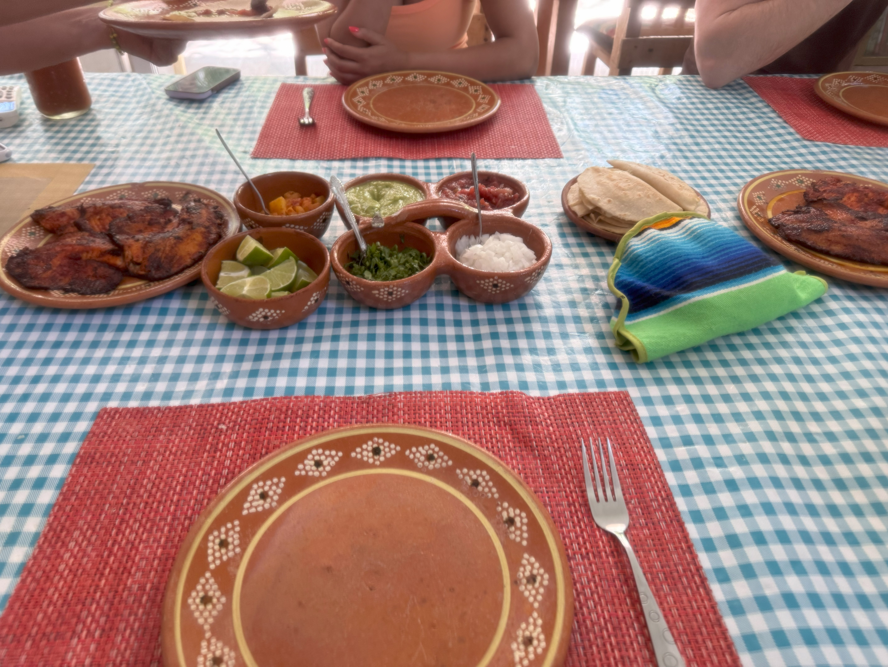

Exquisite quisine In Playa
There are a vast amount of food choices in Playa. The staples of food in Mexican culture are always there. Tacos, burritos, quesadillas, elotes, and the list goes on. However, there is just something much more magnifacent about having Mexican food in the native land! One has to wonder what makes such a differnece is how flovorful the food is in Playa? Maybe its the spices. Maybe its the climate.. Perhaps its just the spirit of the national cook making the meal. Whatever the reason, youre sure to have some of the most flavorful food you.ve ever tasted when you visit Playa Del Carmen.
Below are some images that are sure to ingite your apetite! Also find some great restuarant options you can choose from with your Exclusive Xplor Restaurant Vouchers youll recieve in any package oyu choose to purchase, useful at virtually every restauant located in Playa
 
